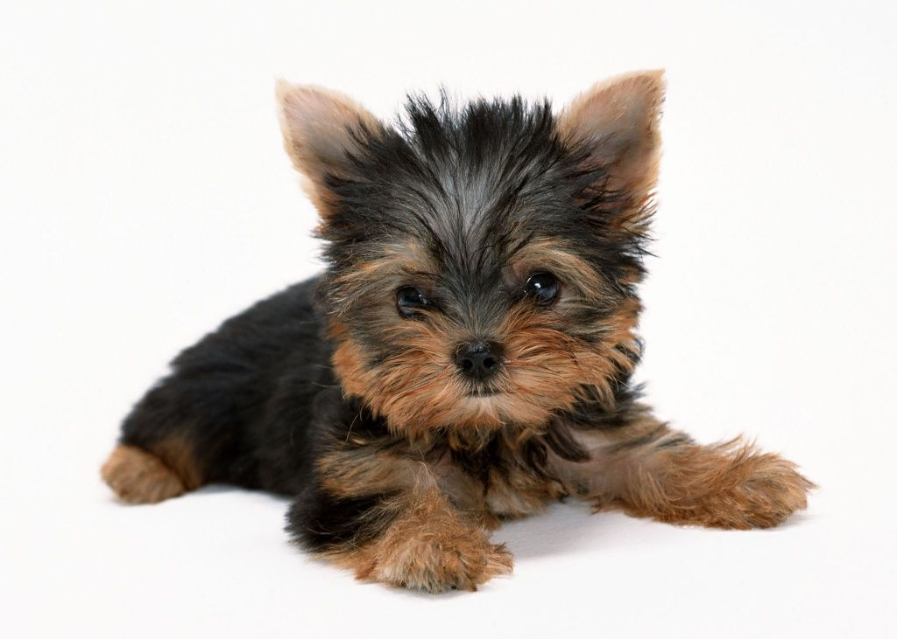

Я — Боня, очаровательный йоркширский терьер, и я хочу рассказать тебе обо всём, что мне дорого: о моей породе, моих привычках, моих мечтах и даже о том, как я сплю!
Эта страничка — мой маленький уголок в огромном интернете. Надеюсь, ты проведёшь здесь время с улыбкой 😊
Йоркширский терьер — это не просто собака, это настоящий компаньон с большим сердцем в крошечном теле! Несмотря на свои скромные размеры (обычно всего 2–3 кг), йорки обладают смелым, энергичным и очень любознательным характером.
Исторически эта порода была выведена в Англии XIX века для охоты на крыс в шахтах и на фабриках. Представляешь? Такие малыши ловили грызунов! Со временем они стали популярны среди аристократов как комнатные декоративные собаки — их даже носили в рукавах или сумочках!
У йорков есть одна удивительная особенность: их шерсть больше похожа на человеческие волосы, чем на собачью шубу. Именно поэтому они почти не линяют и считаются гипоаллергенными — идеальный выбор для людей с чувствительностью к шерсти.
Интересный факт: У йоркширского терьера шерсть растёт постоянно, как у человека! Поэтому её нужно регулярно стричь или укладывать, чтобы она не мешала глазкам и не путалась.
Йорки невероятно преданны. Они быстро привязываются к хозяину и всегда хотят быть рядом — на диване, в кровати, за столом... Иногда кажется, что они думают, будто они люди! Но именно в этом их очарование.
Подробнее о породе на Википедии ->
Это я — Боня! На фото я только что проснулся после дневного сна и решил позировать. Мои глазки блестят от счастья, потому что рядом мой любимый человек. А ещё у меня мягкие ушки и шелковистая шерстка — мама каждый день меня расчёсывает!
Иногда я надеваю бантики или комбинезончики — не потому что мне холодно, а потому что это так мило! Особенно мне нравится красный комбинезон с белыми горошинами. В нём я чувствую себя настоящей звездой!